Typeface Archive
Typeface
윤고딕 700
윤고딕 700은 이름 없는 정보에 신뢰라는 옷을 입히는 서체입니다. 화려한 수식어 없이도 묵직한 존재감을 드러내는 이 서체는, 현대 한국 타이포그래피가 도달한 가장 합리적인 지점입니다.
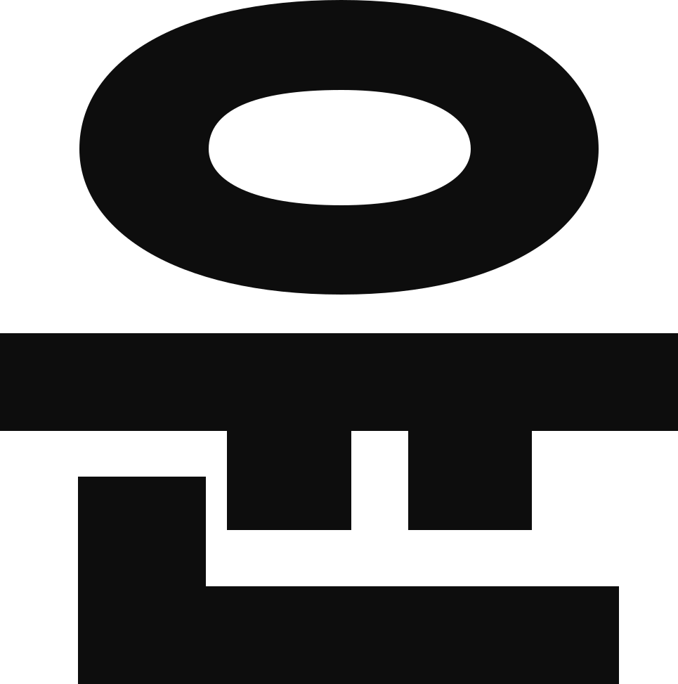
Background
제작 스토리
기억해? 종이보다 화면이 더
익숙해지기 시작한 그해 겨울을.
익숙해지기 시작한 그해 겨울을.
고해상도라는 낯선 풍경 속에서 길을 잃지 않도록 선명한 이정표가 되어준 윤고딕 700은, 끊임없는 자기 갱신과 정제를 거듭한 끝에 비로소 따뜻한 디지털의 온기를 입었습니다. 기존의 서늘한 모던함을 단단하게 유지하면서도 자간과 속 공간을 오밀조밀하게 재설계해, 다정한 인상을 완성했어요.
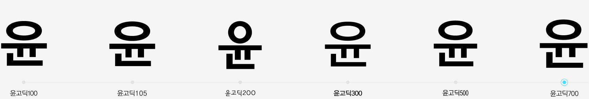
Character Anatomy
자형 특징
획의 끝이 수직·수평으로 명확하게 마감되어 있어, 픽셀 단위로 표현되는 모바일 환경에서 글꼴이 번져 보이지 않고 칼같이 떨어지는 ‘샤프함’을 유지합니다. ‘최적화’처럼 복잡한 글자와 ‘모바일’처럼 단순한 글자가 나란히 배열되어도, 전체적인 글자의 덩어리감이 일정하게 느껴집니다. 이런 디테일 덕분에 웹사이트나 앱에서 윤고딕 700을 볼 때 ‘읽기 편하다’라고 느끼게 됩니다.
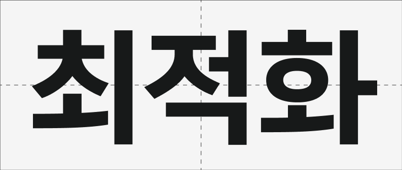
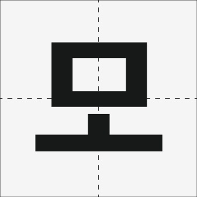
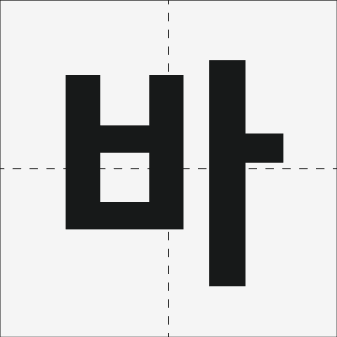
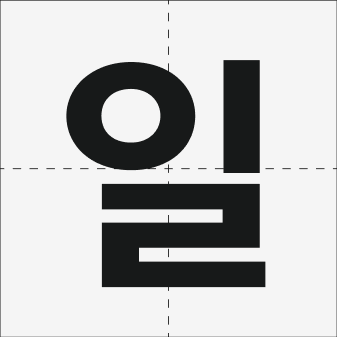
균형 잡힌 공간의 효율적 활용
받침 ‘ㄹ’과 ‘ㅎ’이 포함된 글자들입니다. 윤고딕 700은 네모틀 구조를 탄탄하게 채우면서도, 복잡한 초성과 종성 사이의 시각적 흐름을 세밀하게 조절했습니다.
Font Family
서체가족
변함없는 마음에도 9가지 표정이 필요하니까.
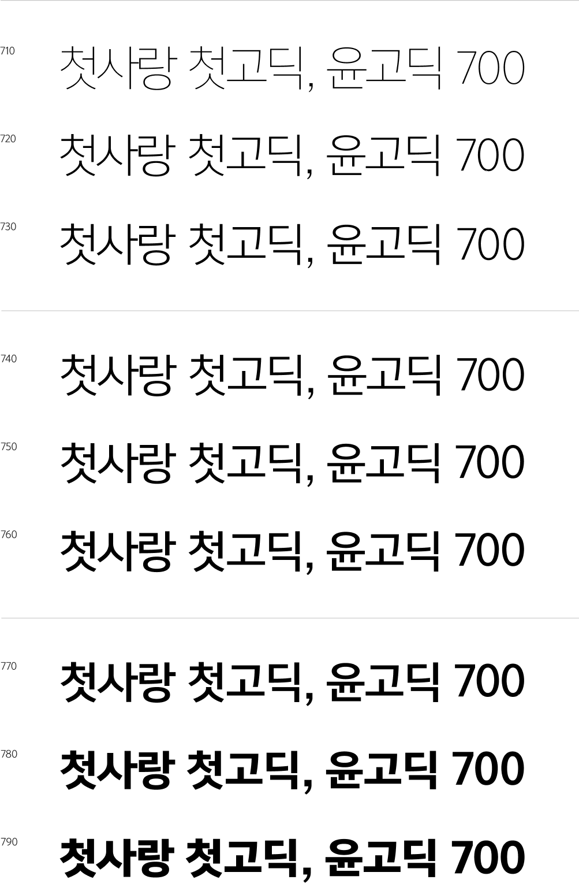
일관된 시각적 흐름
글자가 차지하는 가로폭의 변화를 최소화해 두께를 변경해도 문단의 레이아웃이 크게 틀어지지 않습니다.
정교한 설계 원칙
가장 얇은 710과 가장 두꺼운 790은 획의 굵기 차이가 뚜렷함에도 불구하고, 서체가 가진 고유의 골격과 중심축을 엄격하게 유지합니다.
비교꼴 분석 (1)
Apple SD Gothic Neo
애플 산돌고딕은 자소 사이의 여백을 넉넉하게 배분하여 현대적인 시원한 공간감을 제공합니다. 획의 끝처리가 간결하고 유연하게 마감되어 있어 시각적인 날렵한 속도감을 전달하며, 이는 디지털 스크린 환경에서 탁월한 가독성과 경쾌한 인상을 완성합니다.
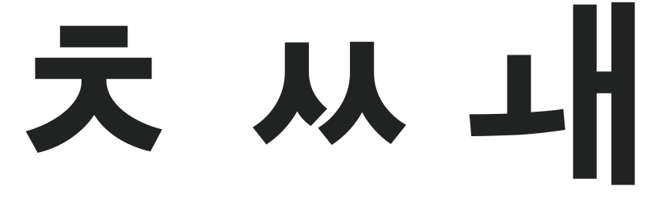
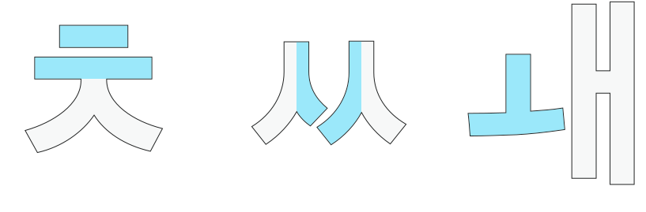
HOVER · 자소 분석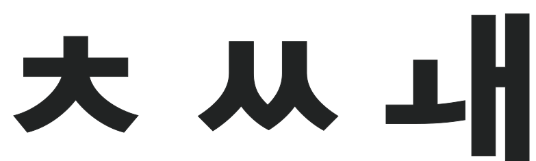
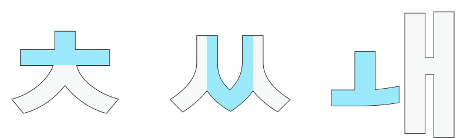
HOVER · 자소 분석비교꼴 분석 (2)
Yoon Gothic 700
윤고딕 700은 ‘ㅊ’, ‘ㅆ’, ‘ㅙ’ 등의 자소에서 획들이 만나는 지점이 단단하고 옹골차게 맞물려 있어 묵직한 밀도감을 줍니다. 특히 ‘ㅍ’의 가로획과 세로획, ‘ㅊ’의 꺾임 부분 등에서 이러한 단단함이 잘 드러나 인쇄 매체 기반의 묵직한 안정감을 구현합니다.
Spacing & White Space
타이포그래피 메시지 표현
자간, 행간 연출을 통한 포스터 제작
“왜 초성과 중성을 붙였을까요?”라는 질문에 대한 해답을 시각적으로 제시합니다. 획과 획 사이의 불필요한 틈을 줄여 완성한 단단한 밀도는 사용자의 망막에 맺히는 상을 더욱 또렷하게 만듭니다. 복잡한 모바일 환경에서도 글자가 뭉치지 않고 ‘쏙’ 들어오는 이유입니다.
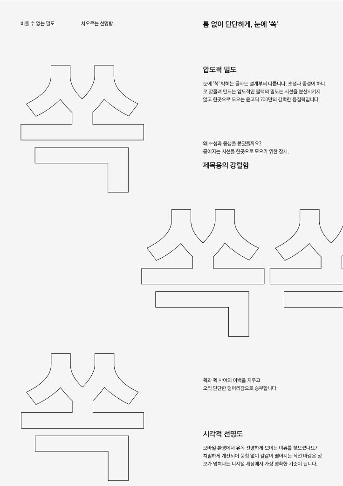